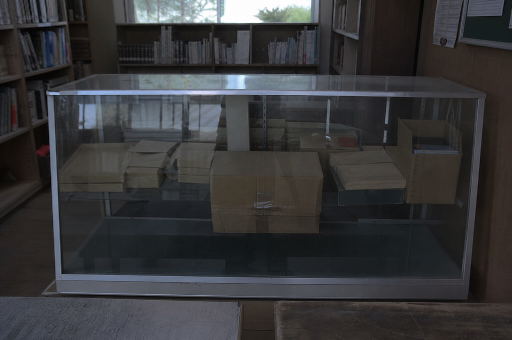

C-0714

展示ケース控え。式典札と照合すると、どの箱だけが再封緘されたか分かります。
| 内容 | 状態 | メモ |
|---|---|---|
| 雨量観測ノート | 表紙濡れ跡 | 7/14の欄だけ濃い筆圧。 |
| 旧体育館修繕写真 | 角折れ | 東階段の踏板浮きが写る。 |
| 校外学習しおり | 良好 | 関係薄。 |
| 貸出カード束 H18-7 | 封筒入り | 相沢澪のカードが上。 |
鉛筆書きで「先生に渡す」。封緘テープは一度切られ、貼り直されています。
公開されなかった順番
C-0714は「開けられなかった箱」ではなく、一度開けてから戻された箱です。中身の怖さより、戻す作業をした人が何を先に知っていたのかが問題になります。
| 箱番号 | 公開状況 | 不一致 |
|---|---|---|
| C-0714 | 封緘のまま展示 | 夜間巡回控えでは移動済み。 |
| C-0920 | 公開可 | 運動会ポスター、保健だより。 |
| C-2007 | 公開可 | 閉校準備の寄せ書き。 |